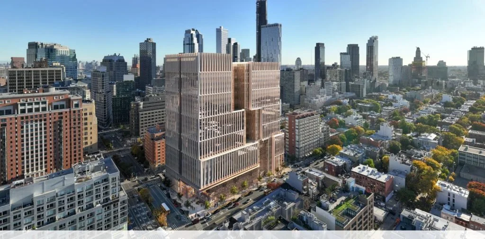
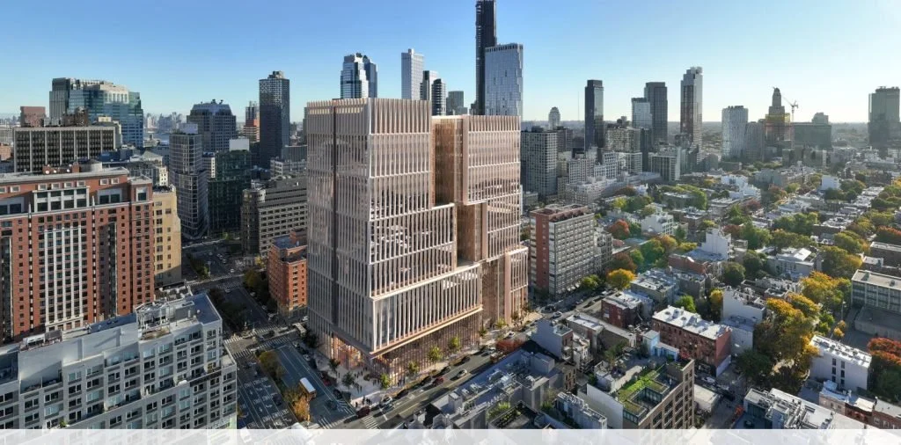

Project Overview
The Borough-Based Jails program represents one of the most ambitious justice architecture initiatives in American history—replacing the notorious Rikers Island jail complex with four new detention facilities integrated into NYC neighborhoods.
This multi-billion dollar initiative fundamentally rethinks detention design, prioritizing rehabilitation, natural light, connection to community, and humane conditions while meeting stringent security requirements. Each facility is designed as a high-rise tower, unprecedented in detention architecture, requiring innovative solutions for vertical circulation, outdoor recreation, and security.
Design Philosophy
The Borough-Based Jails embody a new paradigm in justice architecture: facilities that support rehabilitation rather than merely contain. Key principles include:
- Community Integration – Public arcades at street level connect facilities to their neighborhoods
- Natural Light – Maximized daylight access through innovative facade design
- Therapeutic Environments – Spaces designed to reduce stress and support mental health
- Dignified Design – Architecture that respects the humanity of incarcerated individuals
Project Contribution
- Led conceptual design using Revit for high-rise detention towers across all four boroughs
- Designed outdoor recreation areas balancing security (attack-rated mesh, no-climb barriers) with therapeutic outdoor access
- Created custom Revit families for security-specific elements not available from manufacturers
- Developed construction document details for security-compliant wall assemblies meeting ASTM F33 standards
- Coordinated with NYC agencies on zoning, fire regulations, and building codes
- Coached and mentored team members on justice design principles
Key Design Features
Transitional Housing Units
96-bed floor plates designed for phased reentry programming
Rooftop Recreation
Outdoor spaces with natural daylight at upper levels
Public Arcade
Street-level integration connecting facility with neighborhood
Security Facade
Mesh systems balancing security with dignified appearance
Technical Challenges
High-rise detention facilities present unique technical challenges never before addressed at this scale:
- Vertical Security – Maintaining detention-grade security across 20+ floors
- Emergency Egress – Meeting fire code requirements for incarcerated populations
- Outdoor Recreation – Providing secure outdoor access in a vertical building
- Urban Integration – Embedding a secure facility within dense urban neighborhoods
Planning a Justice Facility?
With experience on America's most ambitious detention project, we bring unique expertise to justice architecture challenges.
Discuss Your Project